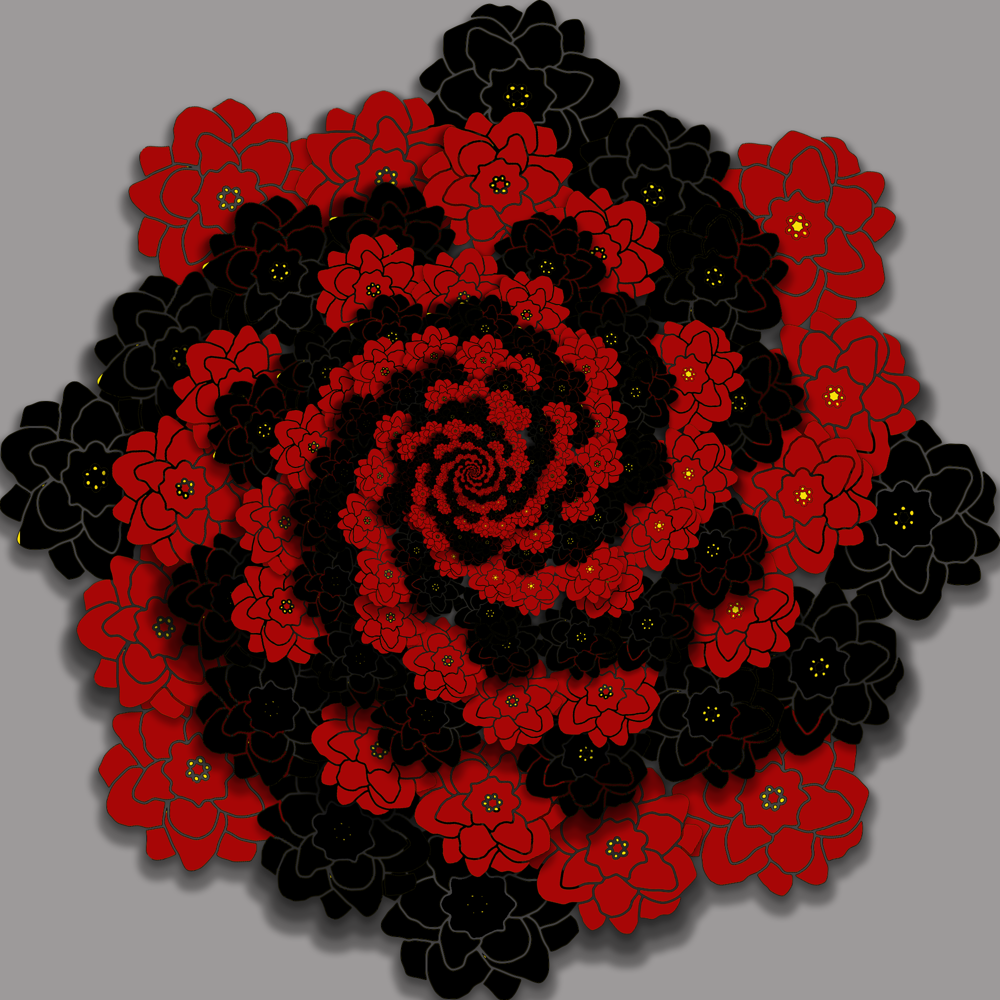
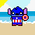

This is my website!
Digital Design
I made this project by writing 6 words that describe my aesthetic. I used adobe express to create a collage that visually represents my aesthetic. I started by searching up images of each word I chose and picked out the ones that matched each other well. I chose pictures that had a darker look to them but also relaxing. I think my collage matches my aesthetic because it represents things that are calming and relaxing to me and also images that represent my overall personality. The point of this project was to combine different images into one place and make the product show a version of your aesthetic.

My social justice topic is masculinity norms and how they affect today's males. I chose this because it's a topic that isn't spoken about much and I wanted to choose something that others wouldn't normally find interesting enough to speak on. This is important to me because my friends and I have had conversations about this topic and I've seen their point of view on how they feel when they are treated in a way that forces them into social norms. I believe that an important piece of information that people should know about this topic is that teenage men are being mentally and physically unstable because of the pressure put into them to have to fit into what men are “supposed” to look like and act.

This project was created repeating most of the steps. I first began with choosing a custom shape tool that I will be using throughout the entire project. I decided on a flower. After taking the shape, rotating it and rotating it, it was time to merge my layers.I then duplicated the new layers and rotated it again. I basically followed this process about 5 times and it started to create the mandala. I was told that I needed to choose colors for this project so I chose red and black to go with my flowers.
The aim for this project was to choose an image of a celebrity and with that image you had to change the coloring and quality to have a final image that represents pop art. After downloading the image and opening it in photoshop, I utilized the quick selection tool to isolate the subject from the background. Then I used the image threshold to lighten the image in order to see certain features. The complete change in color happened when I merged the layers and used the eyedropper tool for the black sections and the color picker for the lighter parts of the image. Overall I chose this celebrity because he is my favorite celebrity and as for the picture, I felt as if this picture shows plenty of details and I decided to use that to my advantage.

I used Adobe Photoshop to create this project. I started by creating the character's base which was the body and after creating the whole character I went onto the background. My character has the body of Captain America and the head of Stitch. He is wearing the marvel superhero costume and the background is the beach since he is part stitch. The video game my character would be a part of would be some type of tropical island video game where there are villains trying to destroy the island. The purpose of my character would be that he will end up saving the island.